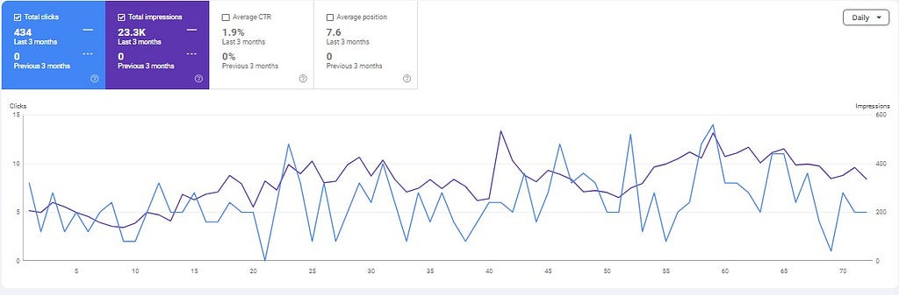

Intent & page mapping
Map priority search themes to the right existing or proposed pages, using competitor and search-result analysis.
I review what your audience is searching for, how your pages answer those needs, and where content or internal links leave gaps. The outcome is a focused plan for improving the pages that matter to your business.
Discuss On-Page SEO ↗I compare clicks, impressions, CTR and position by page and query in Search Console to find where titles or descriptions could better match what people are looking for.
I check which URLs Google shows for the same queries, then map each search intent to the page best suited to answer it.
I map customer questions to relevant service pages and identify where new answers or contextual internal links would help visitors.
Map priority search themes to the right existing or proposed pages, using competitor and search-result analysis.
Review titles, descriptions, headings and content clarity against the purpose of each page.
Identify missing answers, weak content sections and relevant contextual links between pages.
Define a baseline in Search Console and track page/query performance after implementation.
Healthcare and local projects in my portfolio include content and internal-link improvements alongside other SEO work.
Read the full case study ↗
Your website URL, goals, priority services and target market. Read-only Search Console and analytics access can help establish the baseline; access requirements depend on the agreed work.
After reviewing the website and priorities. Deliverables, implementation responsibilities and review points are agreed before work starts.
Yes. Technical access, page relevance and off-page authority are connected. I recommend the starting point based on the constraint rather than a fixed package.
No. Search outcomes depend on competition, the website, implementation and search-system changes. Progress is assessed using an agreed baseline and relevant measures.
Share your website, your goals and what you’d like help with.